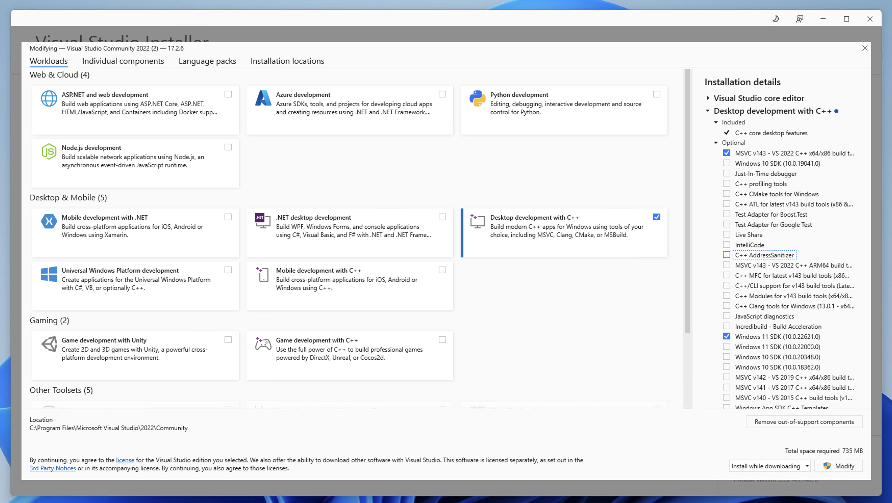

SDK/Environment setup#
This guide will help you set up a development environment on Windows. You can choose between a native development environment, or a Unix-like development environment, or a mix of both.
Prerequisites#
Chocolatey - A package manager for Windows (recommended)
The GNUstep MSVC toolchain - See Installing the GNUstep MSVC toolchain on Windows or Building the GNUstep MSVC toolchain on Windows
1 Compiler and Windows SDK#
As we use native Windows APIs instead of a POSIX compatibility layer like MinGW, we need to install a Windows SDK that comes with Visual Studio.
The Windows SDK supplies the headers and libraries needed to build native Windows applications.
As Microsofts C/C++ compiler (MSVC) does not support Objective-C, and Objective-C++, we use clang, and lld from LLVM to compile and link our code.
1.1 Installing Visual Studio#
For this guide, we will be using the Community Edition, but you can use any edition you want.
Goto Visual Studio 2022 Downloads and download the installer, or use chocolatey:
choco install visualstudio2022community
In the installer, select the workload Desktop development with C++, and the
following optional packages:
MSVC vXXX - VS 2022 C++ x64/x86 build tools
Windows 10 SDK or Windows 11 SDK
Keep in mind that you need to select different build tools depending on your target architecture.
Here is a screenshot of the installer:

1.2 Installing LLVM#
As of writing this guide, chocolatey does not distinugish between x86_64 and arm64. libobjc2 is currently not available for WoA (Windows on ARM), but if you are still interested in arm64 development, you have to install LLVM manually.
1.2.1 Installing LLVM from Chocolatey#
Install the latest version of LLVM from chocolatey:
choco install llvm
1.2.2 Installing LLVM from the release page#
Goto LLVM Releases and download the latest
release. Windows builds are available as LLVM-XXX-win64.exe (x86_64), LLVM-XXX-win32.exe (x86), and LLVM-XXX-win-woa64.exe (arm64).
A note on installing multiple versions of LLVM:
You need to change the install path, and ignore the “LLVM is already installed” error message, by clicking “no” when the LLVM installer wants to uninstall the existing version.
2 Unix-like development environment on Windows#
If you are coming from a Unix-like environment, you might want to use a POSIX shell like bash, a package manager, but still want to use native Windows executables and direct access to the filesystem.
MSYS2 offers exactly that, and we will be using it in this guide.
2.1 MSYS2#
Think of MSYS2 just as a package manager like apt or pacman. In fact, MSYS2 uses a modified version of pacman, the package manager of Arch Linux.
The main difference between MSYS2 and other package managers on Windows is that it provides a POSIX shell environment, and a Unix-like filesystem hierarchy.
If everything you just read sounds like gibberish to you, you can safely skip this section, and continue with the next section.
2.1.1 Installing MSYS2#
Install MSYS2 from msys2.org, or use chocolatey:
choco install msys2
2.1.2 Getting started with MSYS2#
Open the MSYS2 shell by searching for MSYS2 in the start menu. If successful, a terminal window should open, and you should see a bash prompt.
You can now install packages using pacman, the package manager of MSYS2. For example, to install the git package, run the following command:
pacman -S git
For more information about pacman, see the pacman documentation on the MSYS2 website.
2.1.3 Adding Windows executables to the PATH#
If you try and run a Windows executable from the MSYS2 shell, you will get an error message saying that the executable could not be found.
This is because the Windows executables are not in the PATH.
For example, assume that we have a Windows executable located at C:\Program Files\foo\bin\foo.exe. We can add them to the PATH by editing the ~/.bashrc or ~/.bash_profile file.
export PATH=$PATH:/c/Program\ Files/foo/bin
We are using the POSIX path /c/Program\ Files/foo/bin instead of the Windows path C:\Program Files\foo\bin, because the MSYS2 shell translates the POSIX path to the Windows path transparently.
2.2 Windows Terminal integration (optional)#
You can use the MSYS2 shell, and the {x64, x86, ARM64} Native Tools Command Prompt directly from Windows Terminal, by creating a custom profile.
Open Windows Terminal, and click on the dropdown menu, and select “Settings”.
Create a new profile by clicking on the left sidebar on “Add new profile”.
Duplicate the
Command Promptprofile, and change the name.
Before saving the new profile, we need to change the command that is executed when the profile is opened. For this, find the path to the executable by searching for the executable in the start menu, right click on it, and select “Open file location”.
If the file is a shortcut, right click on it, and select “Properties”. Copy the path from the “Target” field, and paste it into the “Command line” field in the Windows Terminal settings.
If the file is an executable, copy the path to the executable instead.
You can now save the profile, and open it by clicking on the dropdown menu on the tab bar.